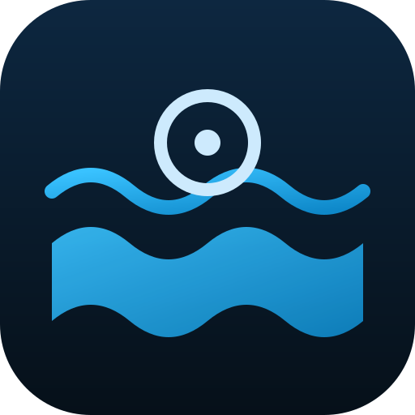

PoolPilot
Beatbot+
🌊
PoolPilot
Beatbot+
…
☀️
📡 Robot en direct
⏳ EN ATTENTE
✕
0%
Couverture
0:00
Temps
—
Batterie
—
État
▶️ Démarrer le robot
📷 Suivi caméra
🔄 Actualiser la position réelle
📷 Robot sous l'eau
🎯 CALIBRAGE
✕
La lumière traverse l'eau — la caméra voit ton robot au fond.
🎯 Recalibrer
🗺️ Voir dans le plan
🧊 Ta piscine en 3D
✕
Fais glisser pour tourner · pince/molette pour zoomer
⏸️ Pause robot
🎥 Recentrer la vue